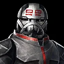
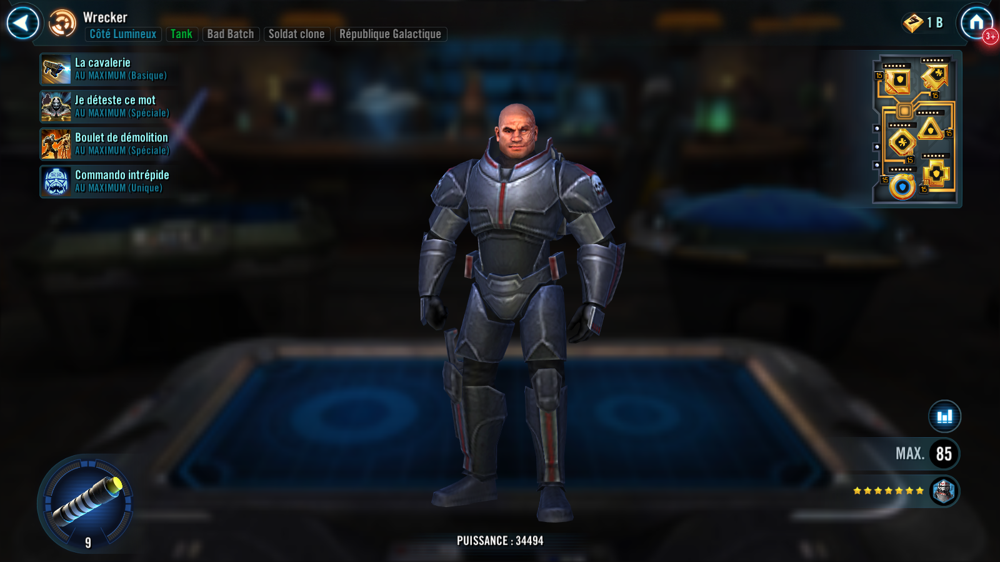
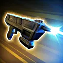
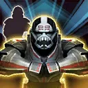
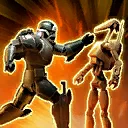
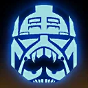

Wrecker
Resilient Clone Trooper who protects his allies and gets empowered when taking damage

Resilient Clone Trooper who protects his allies and gets empowered when taking damage


Deal Physical damage to target enemy. If the target enemy was Target Locked, inflict Speed Down for 2 turns.
Furious: Attack again

Clone Trooper allies recover Protection equal to 5% of Wrecker's Max Protection. Wrecker gains 1 Fury for each Stealthed character, then dispel Stealth from all enemies.
Furious: Bad Batch allies recover Protection equal to 20% of Wrecker's Max Protection; Bad Batch allies gain 10% Turn Meter for each character who was Stealthed

Deal Physical damage to all enemies. Gain Taunt for 2 turns. All Clone Trooper allies gain Defense Up and Tenacity Up for 2 turns.
Furious: Inflict Stun on all enemies for 2 turns

At the start of battle, Wrecker gains +20% Max Health and Max Protection for each other Bad Batch ally. Wrecker gains 1 stack of Fury for each Clone Trooper and each Bad Batch ally. Whenever Wrecker gains Stealth, he dispels it and gains Taunt for 1 turn.
Whenever Wrecker takes damage from an enemy, he gains 1 stack of Fury. At 10 stacks, he loses all stacks of Fury and gains Furious for 2 turns, which can't be copied, dispelled, or prevented. When Wrecker gains Furious, he gains Taunt for 1 turn.
Furious: Abilities gain additional effects; can't gain Fury